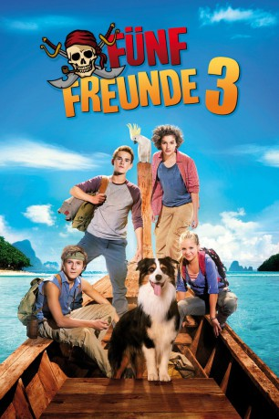

#5229 Fünf Freunde 3
 
 IMDB-Wertung: 5.3 / 10
IMDB-Wertung: 5.3 / 10  Metascore: 0
Metascore: 0 
Eigentlich wollten die fünf Freunde nur einen Urlaub am Meer machen, auf einer Insel, die Onkel Quentin zu wissenschaftlichen Recherchen dient. Doch wie immer kommt es anders, als sie auf ein Schiffswrack stoßen. Joe, ein Mädchen von der Insel, behauptet, darin läge ein Schatz. Den wiederum könnte das Mädchen gut gebrauchen, denn das Haus ihrer Familie steht kurz vor dem Abriss durch einen reichen Investor.
Jahr: 2014
Dauer: 95 Minuten
FSK: 0
Land: Deutschland Studio: Constantin FilmTonspuren:
Untertitel:
Auflösung: 1080p (1920x1040) Größe: 7239 MB
Genre: Abenteuer, Familie
Regisseur: Mike Marzuk
Drehbuch: Emma Donoghue
Soundtrack:
Darsteller:
- Nora von Waldstätten als Cassi
 Sky du Mont als Mr. Haynes
Sky du Mont als Mr. Haynes Sahajak Boonthanakit als Cha-Li
Sahajak Boonthanakit als Cha-Li- Valeria Eisenbart als George
- Quirin Oettl als Julian
- Justus Schlingensiepen als Dick
- Neele-Marie Nickel als Anne
- Coffey als Timmy
- Davina Weber als Joe
- Michael Kessler als Nick
- Michael Fitz als Uncle Quentin
- Snow White als Hugo the Parrot
- Mike Marzuk als Hugo
- Pera-Amporn Jintatipayawan als Joe's Mother
- Kampanat Anurakwongsa als Dang Song
- Cosmo Eskidsen als Construction Manager
- Tanatorn Saetiw als Moto Driver
- Nikom Suksiriwattana als Customs Official
- Darunee Anamat als Airport Employee
- Kanlaya Wisetwoharn als Food Vendor at Airport
Datei: X:\Kinder Collections\Fünf Freunde\Fünf Freunde 3 (2014, FSK0, 1920x1040).mkv seit 03.01.2017
Festplatte: Kinder-Filme+Trick
 Es gibt insgesamt 8 Filme in der Gruppe 'Kinder Collections\Fünf Freunde'
Es gibt insgesamt 8 Filme in der Gruppe 'Kinder Collections\Fünf Freunde'